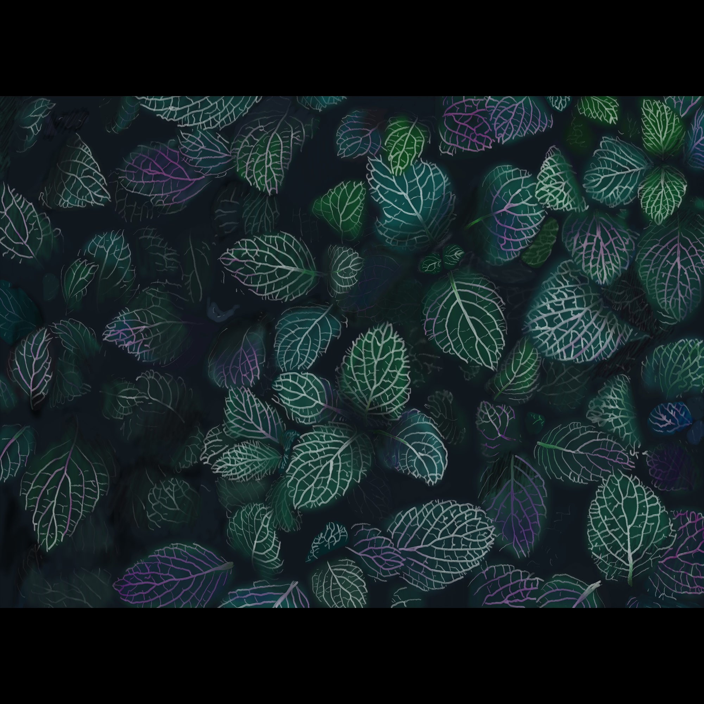
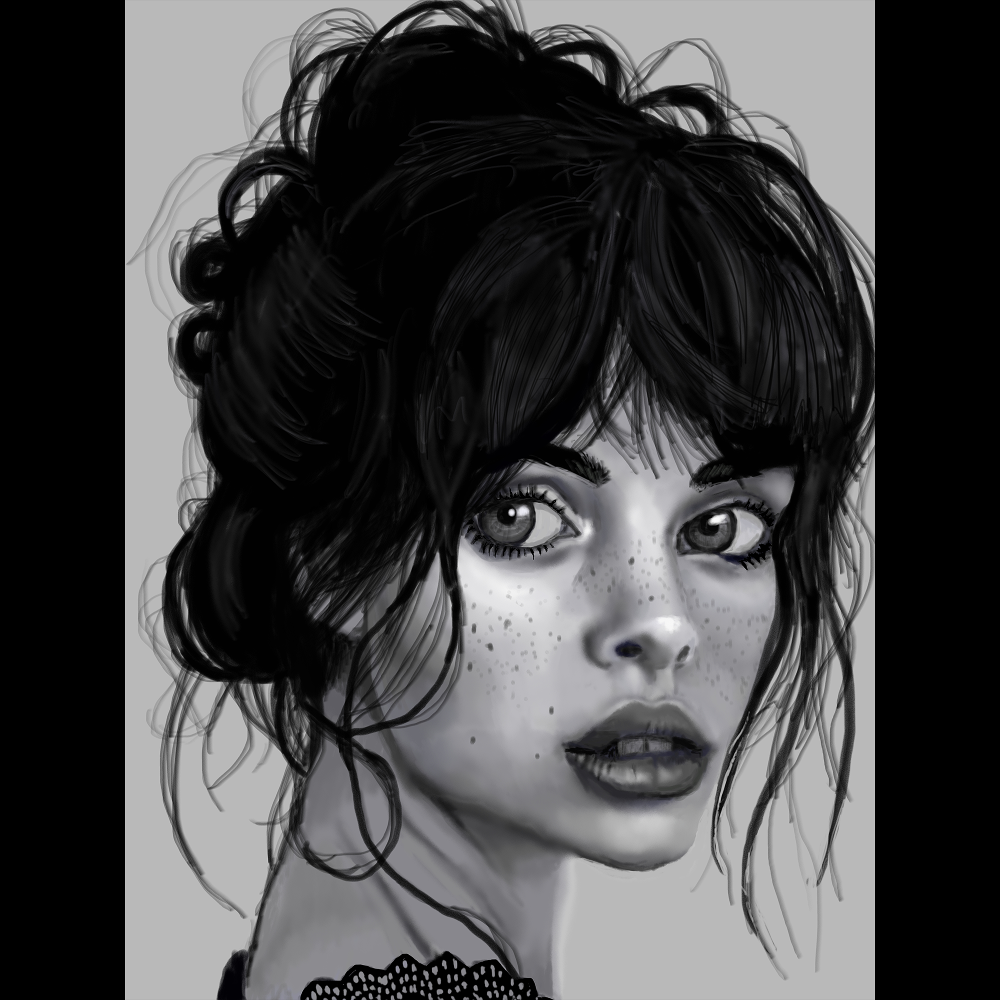

River Carley's Portfolio
Book Covers
House Plant Handbook
This is a subject matter I draw quite often. This peticular peice is the background to the cover of a booklet I made. It was done in Corel Painter. It was drawn from a photo, but I took liberty witht the colors. To see the complete booklet and cover follow this link.
The Time Machine
A book cover I made for The Time Machine by H.G.Wells; a favourite from when I was a teenager. I created the font for the book cover using FontLab and Illustrator
3D Models
Realistic Hands
.jpg)
A passion project where I sculpted my own hands in Zbrush.
Tripod Monster
.jpg)
An experimentation in Zbrush that I came to like. I included a reversed timelapse of the exploratory sculpt. It's crude and long, but I really had no idea what I was making when I started.
Mixed Media
Devil
.jpg)
.jpg)
A model of my uncle from memory done in Zbrush and painted over in Krita.
Frog Monster
.jpg)
.jpg)
A monster I created in Zbrush then painted over in Photoshop.
Collections
Imagination Collection


This is a collection I made in my free time based around the visual representation of the cognitive sensation and phenomenon of imagination. I wanted to show the idea of how creative ideas are formed in three different styles. The right most image is about the crystallization of an idea and done in a realistic style in Corel Painter. The center image is about how the mind stretches to accommodate new ideas and done in a surrealistic style and done in PhotoShop. The left most image is about how the mind travels on a current when imagining and is directed by outside forces and I represented the mind as an abstract leaf on the wind or water and it's done with more traditional mediums of marker and pen. The left most is my favourite of the three because it looks like a lot of different things when rotated.
Tiedye Sky Collections
.jpg)
.jpg)
.jpg)
.jpg)
This collection was very old drawings that I never finished that I re did in Corel Painter to learn the basics of Corel Painter.
Two Face Collection
This is a collection I made based around the inner voice people have. The idea was to put a face to the character of the internal dialog. This is done with pencil and scanned and the levels edited in Photoshop to create a solid black.
Shelf Life Collection

This is a collection called Shelf Life which I did while working at a grocery store. The drawings are pen and ink, scanned and colored in Photoshop.